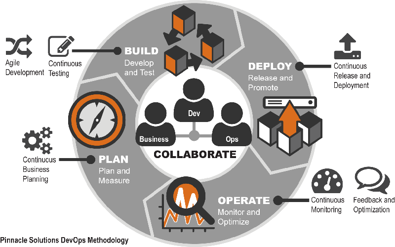

Siapa saja yang terlibat dalam Development Cycle?
Mengenal Developer
- Developer (atau biasa disebut Programmer), adalah sang pembuat Aplikasi. Mereka menterjemahkan seluruh kebutuhan-kebutuhan, requirement, dan desain yang ada, menjadi bentuk kode, dan dari kode ini muncullah aplikasi yang diinginkan
- Hasil coding yang dibuat Developer ini nantinya harus diletakkan/di deploy ke Server agar bisa ditampilkan ke sisi pengguna. Server ini yang mengelola dan yang mengkonfgurasinya adalah tim Operation, yang artinya memang sangat erat kaitannya antara tim Developer dengan tim Operation secara pekerjaan.
|
 |